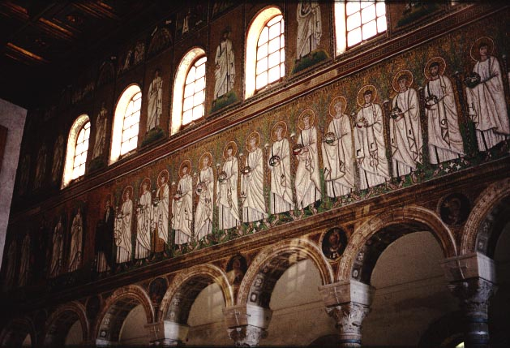
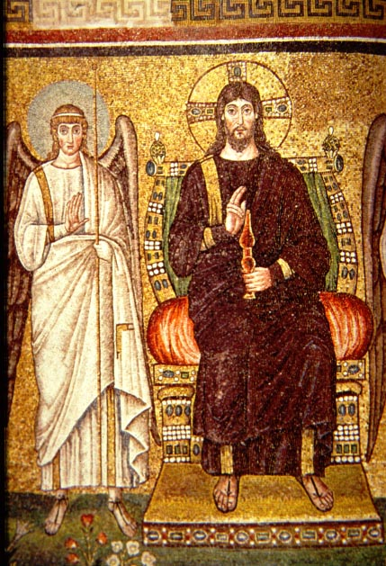
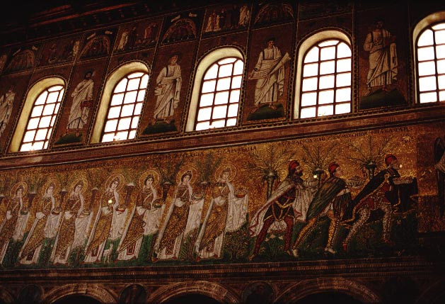

View of the side wall of the church, showing a procession of
martyr-saints.
This
procession was put up after the orthodox conversion; it is not known
what decorated
the walls in Theodoric's time.

The martyrs are processing from this image, which represents the
palace
of Ravenna. Originally, there were figures standing in the spaces
between the colums, presumably with Theodoric in the center. When
the church was converted to orthodoxy from Arianism, the figures were
replaced
by curtains.

The martyrs are processing toward this image of Christ, which was
part
of the original Arian decoration. Here Christ is shown dressed
like
an emperor, seated on an imperial throne.

On the opposite wall, a procession of virgin saints processes from the city of Classe to the Virgin and child. Their procession is led by the three magi. Above them you can see apostles and evangelists, between the windows.